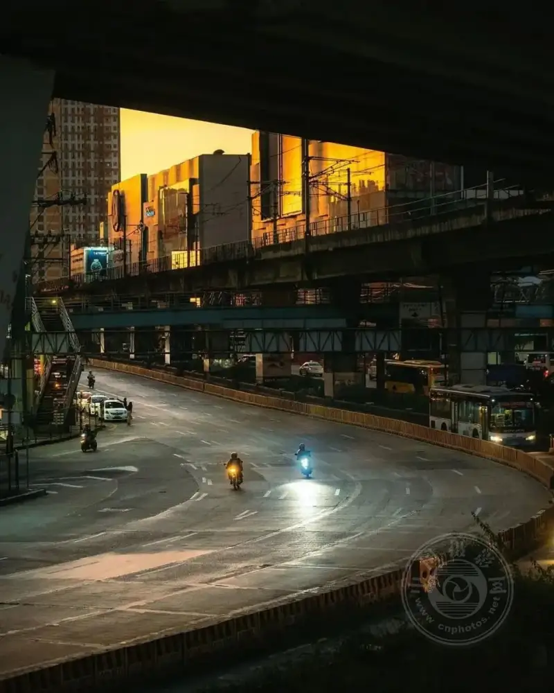
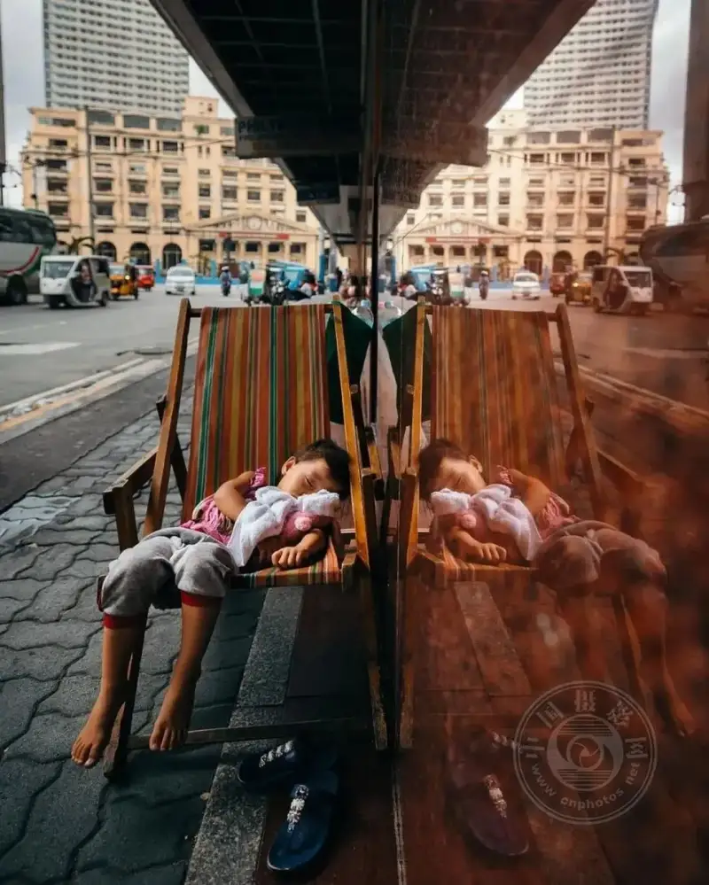
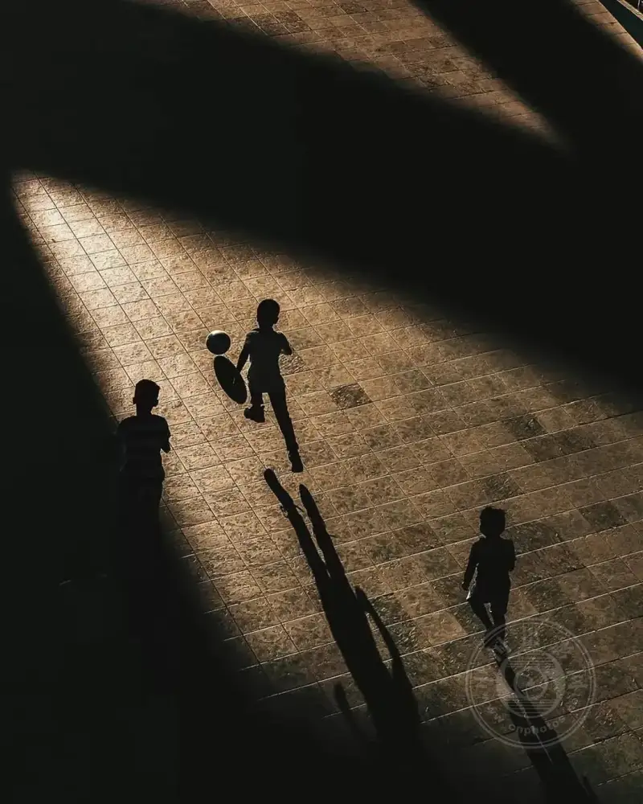
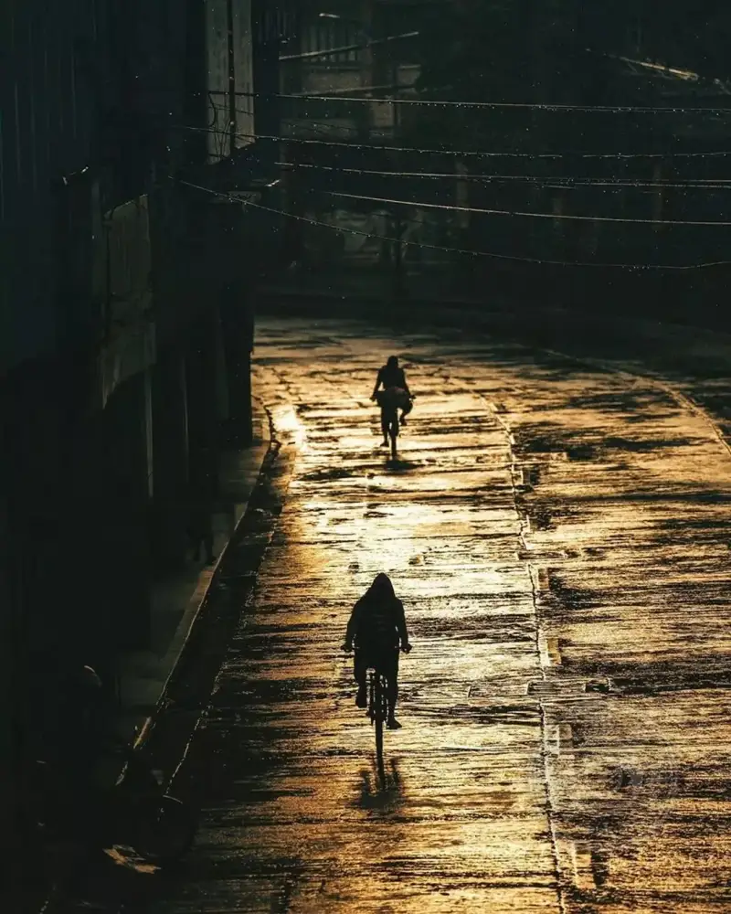
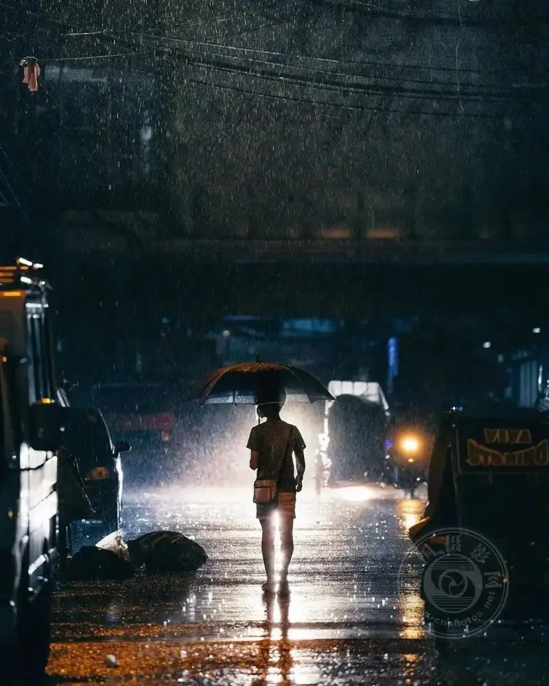
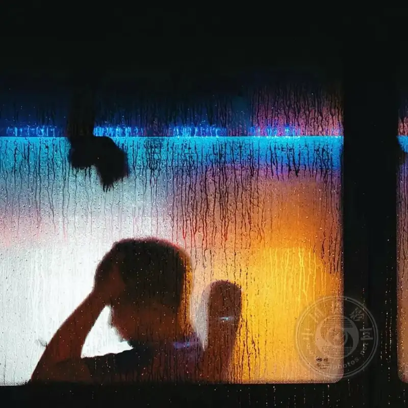
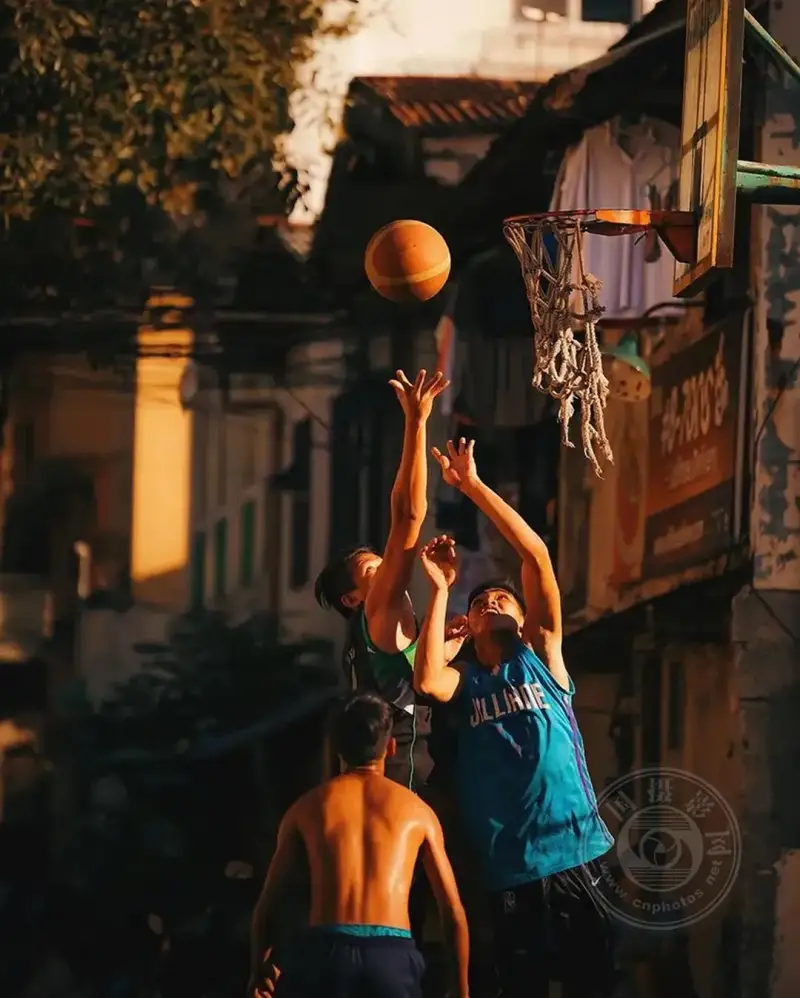
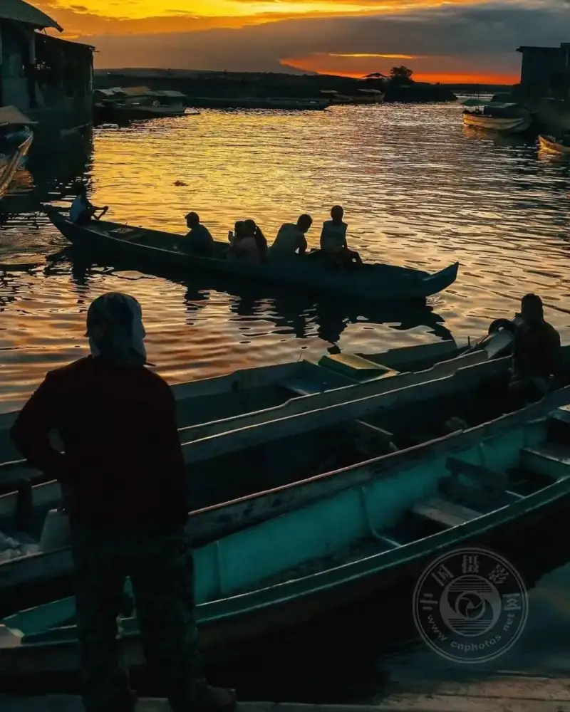
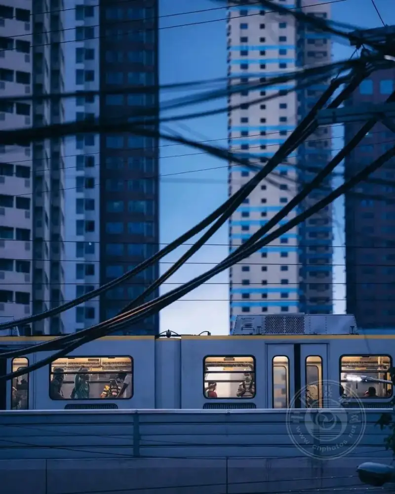

Today almost everyone carries a phone and shoots wherever they go. But having a device does not by itself make good photos. Below are 10 ideas that help you take photos you like more.
Tip 1. Put a person into the landscape
A person in a landscape often looks good. In a scenic photo, a human touch is the finishing point. It adds life to a still frame and also balances the image.


Tip 2. Strengthen the contrast between person and building
Only with contrast can the true scale of a building or setting show. A person is a good reference.


Tip 3. Shoot low
This is also called a low-angle shot. Try to bring the camera close to the ground. A changed angle gives a whole new view, and the result is fun.


Tip 4. Use reflective surfaces for symmetry
Symmetry always looks pleasing. A lake, a wet floor, and the glass windows of a building are all good reflective surfaces.


Tip 5. Try a silhouette
If you are used to lighting every element, switching to a silhouette now and then brings unexpected results and adds a touch of mystery.


Tip 6. Emphasize the visual focus
You can use silhouettes and framing to emphasize the main point, or use editing software later to highlight a visual focus.



Tip 7. Do not give up because of bad weather
Do not cancel your street shoot just because it is windy or rainy. Bad weather often produces the most striking photos.




Tip 8. Capture the instant
The charm of photography is freezing a moment. Sometimes the highlight appears in a single instant, and catching it shows your skill. The better you know your camera, the more you can catch the moment before it slips away.


Tip 9. Strangers are good subjects too
For travel photography, besides scenery and food, the people on the local streets are also good subjects. They often show the local culture. But always ask first and smile. Your goodwill will bring understanding and good work.


Tip 10. Shoot at dawn or dusk
Before sunrise in the morning, and around sunset in the afternoon, is the golden hour for photography.
At this time the sky often shows a lovely orange-red or cyan-blue. The light ratio is not too high for accurate exposure, the light is soft, and backlit shots look good no matter how you frame them.


Many beginners do not know where to start or how to improve. Try to practice these 10 points, and you will gain from it.